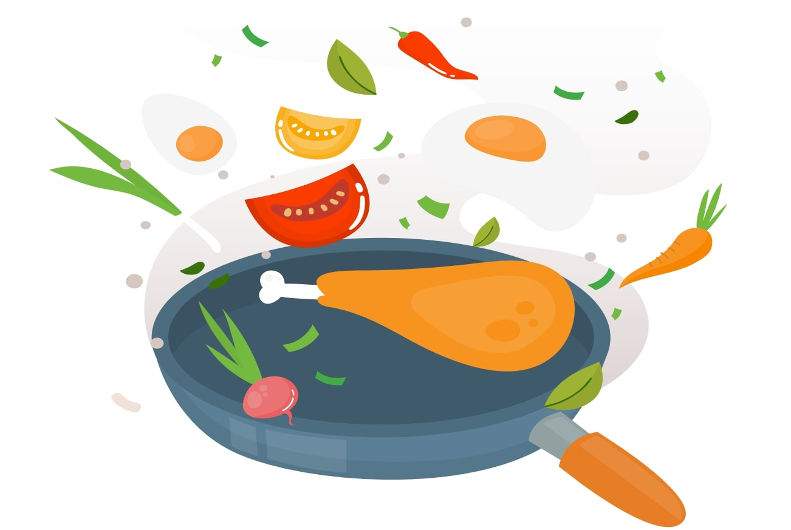

Cooking food the healthier way !
This is your go-to guide to cooking food the healthier way. By changing your
cooking method, substituting you cooking oil, adding fresh ingredients, and
changing your cookware, you can achieve your health goals rather easily.
Safe Cooking Methods

The cooking method you choose has a significant effect on the nutrition quotient
of your meal. Avoid cooking methods that add unhealthy fats (saturated and
trans fats) or let food cook in its own fat. Instead, use these heart-healthy
cooking methods:
This method involves using steam to cook food at high temperatures. The cooking time is much shorter than boiling and fewer nutrients are lost in this process.
What to pressure-cook:
Beans, dal, grains, millets, sabzi, and cheap cuts of meat as it tenderizes quickly.
Why it's healthy:
Full flavour without cooking in fat.
Food cooks more quickly.
Retains more nutrients.
Tips and hacks:
Never fill a pressure cooker more than two-thirds with food.
Add food according to the cooking time.
Add root vegetable at the start & other vegetables such as mushrooms later.
This method uses steam from a small amount of water to cook food quickly over high heat. It helps retain the texture and flavour of the food.
What to steam:
Veggies, seafood, chicken, idlis, momos, muthiyas, etc.
Why it's healthy:
Retains compounds such as Vitamin B and C, as well as cancer-fighting nutrients such as Glucosinolates.
Healthier than boiling as food cooks quickly.
Retains nutrients as well as the texture and flavour of food.
Tips and hacks:
Minimize nutrient loss further by cooking the vegetables with the skins on. Peel the skins off only after they are cooked.
In this an ancient Chinese cooking technique that relies on hot temperatures and a small amount of oil. Since food is cooked in a hot wok, the cooking time is much shorter and it preserves the nutritional value of the ingredients.
What to stir fry:
Equal-sized chopped pieces of vegetables, meat or tofu, paneer, etc.
Why it's healthy:
Stir-fry uses far less oil than frying making it a healthier alternative.
Does not compromise on the flavour of the food.
Stir-fried dishes can be both nutritious and low in calories.
Tips and hacks:
Do not cook ice-cold meats.
While cooking vegetables, blanch certain veggies such as carrots, beans, and broccoli and add the leafy greens at the end to retain the crispiness.
Possible side effects:
Exposing oils to high heat can result in the production of oxidized compounds and free radicals that are harmful for your health. You can control this oxidization of compounds by using an oil with a higher smoke point that reduces fumes.
This cooking method uses high heat, 400 degrees Fahrenheit or higher, either in an oven or over an open flame.
What to roast:
Vegetables, kebabs, and meats like chicken and beef.
Why it's healthy:
Roasting also encourages caramelization of the sugars in vegetables, adding flavour without a lot of fat.
Tips and hacks:
While roasting veggies cut them into equal sizes for even cooking.
Do not overcrowd the pan as it results in a soggy outcome.
When roasting meats, place them over a rack so the fat drips away.
Roasting starchy plant-based food (like potatoes and bread) may pose a health risk when they're over-roasted. In addition, over-roasting can result in the formation of acrylamide, a compound which may be linked to cancer. To avoid over-roasting, cook potatoes till they are golden yellow.
This method cooks food a direct, high heat, one side at a time. It requires a short amount of cooking time, which is good as the vitamins are not lost in the cooking process and the ingredients remain succulent.
What to grill:
Meats, steaks, burger patty, veggies, fruits, and even sandwiches.
Why it's healthy:
Grilling is considered a healthy alternative to frying because instead of cooking in oil, the oil drips away from the food.
It preserves vitamins which are essential for the body
Grilled food is friendly to the heart and the waistline.
Tips and hacks:
When fat drips and burns on the grill, the resulting smoke contains Polycyclic Aromatic Hydrocarbons (PAHs) which has been linked to cancer. You can reduce the formation of PAHs by lining the grill with a foil perforated with holes.
Don't consume the charred particles on the food and the grill.
Marinating food for a while before cooking also limits the formation of potential
carcinogens while grilling.
Cook for longer at a lower temperature.
Keep raw meat, poultry, and seafood separate from vegetables and other food.
Have a spray bottle filled with water handy to control fatty flare-ups.
This is a dry-heat method that usually uses only a small amount of fat to keep the food from sticking to the pan.
What to sauté:
Cuts such as beef tenderloin, fish fillets, and chicken breasts, chicken fillets, veggies, etc..
Why it's healthy:
Very little oil is used making it a healthier choice.
The cooking time is shorter, so fewer nutrients are lost.
Tips and hacks:
Cut the veggies into equal size for even cooking.
Use oil which has a high smoke point.
Make sure there is only one layer of food cooking in the pan at a time.
This method includes pot roasting, stewing, braising, and casseroling. It is generally easier to make and very cost-effective.
What to slow cook:
Ideal for tenderizing less expensive, tougher cuts of meat, root vegetables, etc.
Why it's healthy:
Low-fat recipes can be made by braising, cooking in broths, water, adding spices and other aromatics.
Helps to retain natural oil, moisture and nutrition value.
Improves the flavour and texture of meat.
Tips and hacks:
Add fish and seafood and dairy only towards the end of cooking.
Add root vegetables at the start as it takes time to cook and add other delicate vegetables at the end (last 15 -30 mins).